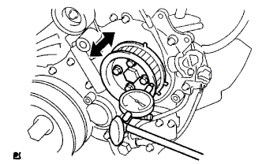
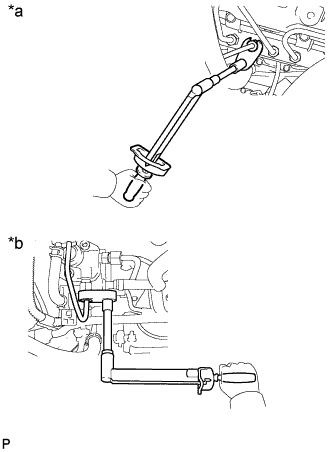
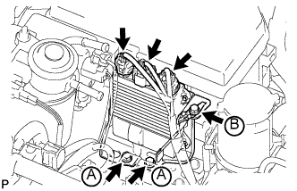

НАГНЕТАЮЩИЙ ТОПЛИВНЫЙ НАСОС (для моделей без DPF) > УСТАНОВКА |
| 1. УСТАНОВИТЕ НАГНЕТАЮЩИЙ ТОПЛИВНЫЙ НАСОС В СБОРЕ |
 |
Убедитесь, что шестерня нагнетающего насоса в картере газораспределительного механизма плавно перемещается назад и вперед.
Установите новое кольцевое уплотнение на нагнетающий топливный насос.
Нанесите на уплотнительное кольцо тонкий слой моторного масла.
Совместите канавку шестерни нагнетающего насоса с установочной шпонкой на приводном валу.
Закрепите нагнетающий топливный насос 2 гайками.
Установите новое уплотнительное кольцо.
Используя SST, зафиксируйте шкив коленчатого вала и заверните установочную гайку.
 |
Закрепите шкив приводного вала насоса и фланец зубчатого колеса распредвала № 2 4 болтами.
|  |
Переместите шкив приводного вала насоса назад и вперед, чтобы проверить осевой зазор приводного вала насоса высокого давления.
Подсоедините разъем датчика температуры топлива и разъем клапана регулирования всасывания.
Подсоедините 2 топливных шланга.
| 2. УСТАНОВИТЕ ЭЛЕМЕНТ ЗАЩИТЫ НАГНЕТАЮЩЕГО ТОПЛИВНОГО НАСОСА № 1 |
Закрепите элемент защиты нагнетающего топливного насоса № 1 2 болтами.
| 3. УСТАНОВИТЕ ИЗОЛЯТОР НАГНЕТАЮЩЕГО ТОПЛИВНОГО НАСОСА |
 |
Установите изолятор нагнетающего топливного насоса.
 | Передняя сторона автомобиля |
| 4. УСТАНОВИТЕ ТРУБКУ ПОДВОДА ТОПЛИВА |
Установите трубку подвода топлива и временно закрепите ее гайками штуцеров.
|  |
С помощью разрезной головки на 17 мм затяните гайку штуцера трубки подвода топлива со стороны топливной системы Common Rail.
| *a | Сторона топливной системы Common Rail |
| *b | Сторона нагнетающего топливного насоса |
С помощью разрезной головки на 17 мм затяните гайку штуцера трубки подвода топлива со стороны нагнетающего топливного насоса.
 |
Установите зажим и закрепите его болтом.
| *1 | Трубопровод обратного слива топлива № 2 |
| *2 | Трубка подвода топлива |
| *3 | Золотник |
| 5. УСТАНОВИТЕ ВПУСКНОЙ ПАТРУБОК № 1 |
Подсоедините впускной патрубок № 1 с воздушным шлангом и вверните 2 болта.
Затяните 2 зажима воздушного шланга № 1.
Затяните зажим воздушного шланга промежуточного охладителя.
Подсоедините вакуумный шланг к разъему датчика абсолютного давления в коллекторе.
Подсоедините 3 разъема к датчику температуры воздуха на впуске, электродвигателю привода дроссельной заслонки и датчику абсолютного давления в коллекторе.
Установите 2 зажима.
| 6. ПОДСОЕДИНИТЕ ВАКУУМНУЮ ТРУБКУ № 4 В СБОРЕ |
Подсоедините вакуумную трубку № 4 с помощью болта.
| 7. ПОДСОЕДИНИТЕ ПАТРУБОК ОХЛАЖДАЮЩЕЙ ЖИДКОСТИ ПОДОГРЕВАТЕЛЯ В СБОРЕ |
Подсоедините входной патрубок отопителя с помощью болта.
| 8. ПОДСОЕДИНИТЕ МАСЛЯНЫЙ БАЧОК ЛОПАСТНОГО НАСОСА В СБОРЕ |
Временно закрепите масляный бачок лопастного насоса 3 болтами.
Затяните 3 болта масляного бачка лопастного насоса в порядке, показанном на рисунке.
| 9. УСТАНОВИТЕ ЭЛЕКТРОННЫЙ БЛОК ПРИВОДА ФОРСУНОК |
|  |
Закрепите электронный блок привода форсунок в сборе 3 болтами.
Подсоедините 3 разъема.
| 10. УСТАНОВИТЕ ПРИВОДНОЙ РЕМЕНЬ ГАЗОРАСПРЕДЕЛЕНИЯ |
Установите приводной ремень газораспределения (Нажмите здесь).
| 11. ПОДСОЕДИНИТЕ ПРОВОД К ОТРИЦАТЕЛЬНОМУ ВЫВОДУ АККУМУЛЯТОРНОЙ БАТАРЕИ |
| 12. ДОБАВЬТЕ ОХЛАЖДАЮЩУЮ ЖИДКОСТЬ ДВИГАТЕЛЯ |
Затяните пробку сливного крана радиатора вручную.
Затяните пробку сливного крана блока цилиндров.
Заполните радиатор охлаждающей жидкостью с увеличенным сроком замены "Super Long Life Coolant (SLLC)" от компании Тойота, залив ее в трубопровод B расширительного бачка.
| Параметр / Устройство | Заданные условия | |
| для моделей с автоматической трансмиссией | Для моделей с задним подогревателем | 14,9 литра (15,7 кварты США, 13,1 английской кварты) |
| Для моделей без заднего подогревателя | 13,1 литра (13,8 кварты США, 11,5 английской кварты) | |
| для моделей с механической трансмиссией | Для моделей с задним подогревателем | 15,0 литра (15,8 кварты США, 13,2 английской кварты) |
| Для моделей без заднего подогревателя | 13,2 литра (13,9 кварты США, 11,6 английской кварты) | |
Несколько раз сожмите рукой входной и выходной патрубки радиатора, затем проверьте уровень охлаждающей жидкости.
Если уровень охлаждающей жидкости опускается ниже линии В, долейте охлаждающую жидкость SLLC Toyota до линии В.
Установите пробку расширительного бачка радиатора.
Установите вентиляционную пробку с помощью гаечного ключа.
Выпустите воздух из системы охлаждения.
Прогревайте двигатель, пока не откроется термостат. Когда термостат откроется, несколько минут прокачивайте охлаждающую жидкость.
Поддерживайте частоту вращения коленчатого вала двигателя на уровне 2500–3000 об/мин.
Несколько раз сожмите рукой входной и выходной патрубки радиатора, чтобы удалить воздух.
Остановите двигатель и подождите, пока охлаждающая жидкость остынет до температуры окружающего воздуха.
Когда охлаждающая жидкость остынет, убедитесь, что она находится на уровне отметки FULL.
Если уровень охлаждающей жидкости ниже отметки FULL, долейте SLLC от компании Тойота до этой отметки.
| 13. УДАЛИТЕ ВОЗДУХ ИЗ ТОПЛИВНОЙ СИСТЕМЫ |
 |
С помощью ручного насоса, установленного на крышке топливного фильтра, удалите воздух из топливной системы. Продолжайте прокачку, пока сопротивление насоса при работе не возрастет.
Запустите двигатель.
Если двигатель запускается, перейдите к следующему шагу.
Если запуск двигателя невозможен, прокачайте систему снова с помощью ручного насоса до повышения сопротивления насоса (см. процедуры выше). Затем запустите двигатель.
Выключите зажигание.
Подсоедините портативный диагностический прибор к DLC3.
Включите зажигание (IG) и портативный диагностический прибор.
Сбросьте коды DTC (Нажмите здесь).
Запустите двигатель.*1
 |
Войдите в следующие меню: Powertrain / Engine and ECT / Active Test / Test the Fuel Leak.*2
| *a | Для справки Испытание в режиме Active Test |
Выполните следующее испытание 5 раз с интервалами включения/выключения 10 с: Active Test / Test the Fuel Leak.*3
После 5-го испытания в режиме Active Test дайте двигателю поработать на холостом ходу в течение не менее 3 мин.

Войдите в следующие меню: Powertrain / Engine and ECT / DTC.
Считайте текущие коды DTC.
Сбросьте коды DTC (Нажмите здесь).
Повторите операции с *1 по *3.
Войдите в следующие меню: Powertrain / Engine and ECT / DTC.
Считайте текущие коды DTC.
| 14. ПРОВЕРЬТЕ, НЕТ ЛИ УТЕЧЕК ОХЛАЖДАЮЩЕЙ ЖИДКОСТИ |
Заполните радиатор охлаждающей жидкостью и подсоедините приспособление для опрессовки системы охлаждения и проверки пробки радиатора.
Прогрейте двигатель.
С помощью приспособления для опрессовки системы охлаждения и проверки пробки радиатора увеличьте давление в радиаторе до 123 кПа (1,3 кгс/см2, 18 фунтов на кв. дюйм) и убедитесь, что давление не падает.
Если давление снижается, проверьте на наличие утечек шланги, радиатор и насос системы охлаждения. При отсутствии внешних утечек проверьте сердцевину нагревателя, блок цилиндров и головку.
| 15. ПРОВЕРЬТЕ, НЕТ ЛИ УТЕЧЕК ТОПЛИВА |
Убедитесь, что когда двигатель остановлен, нет утечки из какой-либо части топливной системы. При обнаружении утечки топлива отремонтируйте или замените детали, если это необходимо.
Запустите двигатель и убедитесь, что в топливной системе нет утечек. При обнаружении утечки топлива отремонтируйте или замените детали, если это необходимо.
Отсоедините возвратный шланг от топливной системы Common Rail.
Запустите двигатель и проверьте возвратный трубопровод на наличие утечек топлива.
В случае наличия утечек топлива замените топливную систему Common Rail.
Подсоедините портативный диагностический прибор к DLC3.
Запустите двигатель и включите портативный диагностический прибор.
В режиме Active Test портативного диагностического прибора выберите Fuel Leak Test.
Если портативный диагностический прибор недоступен, быстро до упора нажмите педаль акселератора. Увеличьте частоту вращения коленчатого вала двигателя до максимума и поддерживайте ее в течение 2 с. Повторите эту операцию несколько раз.
Убедитесь в отсутствии утечек топлива из топливной системы.
Подсоедините возвратный шланг к топливной системе Common Rail.